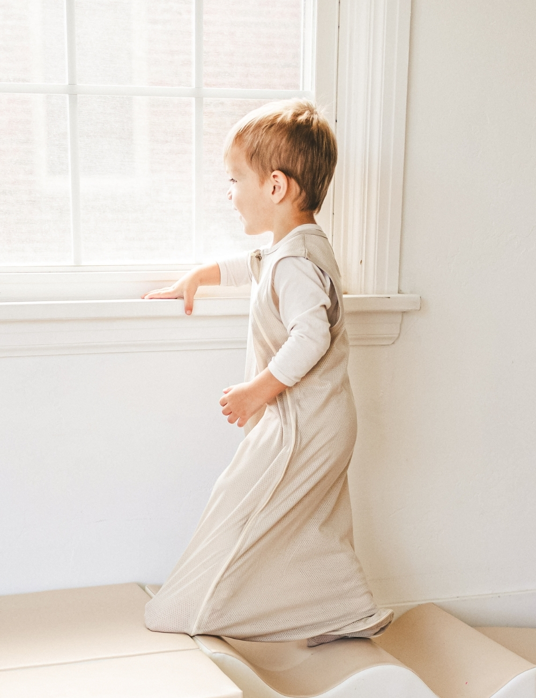

SUNDAY HUG
빛을 차단하면
아기의 잠이 달라져요
휴대용 아기침대를 위한 프리미엄 암막 커버
썬데이허그 ABC 아기침대 암막 커버
휴대용 아기침대를 위한 프리미엄 암막 커버
썬데이허그 ABC 아기침대 암막 커버


"암막 환경에서 잠든 아기는
수면의 질이 확연히 다릅니다"



아기 얼굴 확인 및
상태 체크

통풍 및
편리한 접근
| 모델명 | 썬데이허그 ABC 아기침대 암막 커버 |
|---|---|
| 색상 | 블랙 |
| 크기 | 105cm x 75cm x 74cm |
| 소재 | 폴리에스터 95%, 스판덱스 5% |
| 제조국 | 중국산 (썬데이허그 협력사) |
| KC 인증 | [어린이제품] 안전확인_국가인증 인증번호: CB014R2450-5001 |
세탁망에 넣고 중성세제를 사용하여 찬물로 단독 울 코스 세탁 권장
물 빠짐이 있을 수 있으니 반드시 단독 세탁해 주세요.
건조기 사용 가능하나, 잦은 세탁 및 건조 시 수축 가능.
장시간 물에 담가두거나 표백제 사용 시 탈색 및 이염 주의. 알칼리성 세제 사용을 금합니다.
"작은 배려가 모여
아기의 하루를
더 행복하게 만듭니다"

뛰어난 차광률 / 탁월한 통기성 / 간편한 탈부착
위쪽 창·옆쪽 창 열림 기능 / KC 인증